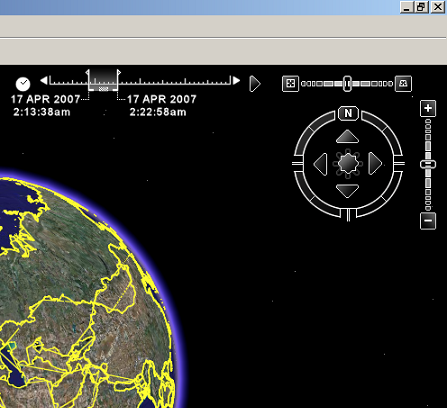

Google Earth offers the opportunity to display a selected subset of all objects within a *.kml-file. The selection is based on the value of parameters "timeSpanStart" and "timeSpanStop". These parameters indicate at what time a certain object such as a point, line, polygon, or collada model should be displayed. By moving the slider of the timeline tool (see picture below), one is able to show or hide objects at specific simulation times only. Also, the direction of movement of the slider can be set to move forward in time or backward. By adjusting the width of the slider, one is able to show objects from that period of time.
See ge_quiver3() for an example of how to use the timeSpan parameters.
